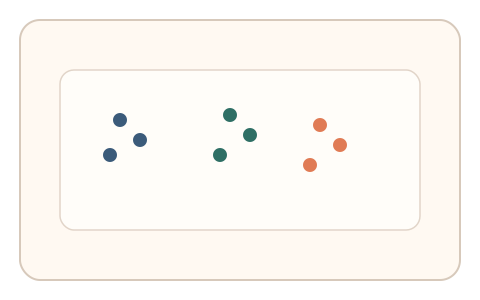
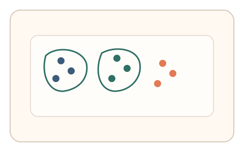
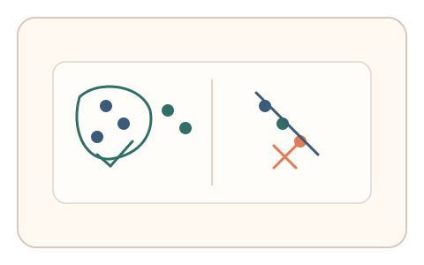

#19
视觉思考范式：空间/结构/直觉
已扩展
形态直觉分组
利用 Gestalt 分组直觉与描绘路径的一致性来验证真实性。
概念原文
给出多组形态排列，要求用户快速选择“最符合直觉的分组”，随后用鼠标轻描分组路径。人类的 Gestalt 分组直觉具有稳定一致性。
利用“视觉直觉+动作表达”的联合特征，而非单纯判断题。
研究背景
人类在相似性、接近性、连续性等 Gestalt 规则下会形成稳定的分组直觉。将这一视觉直觉与动作表达结合，可得到比单纯判断更稳定的行为签名。
核心机制
- 展示多个形态元素与几种潜在分组结构。
- 用户选择最符合直觉的分组并轻描分组路径。
- 记录分组选择、描绘顺序与笔划连贯性。
- 与群体一致性与动作特征区间进行比对。
用户流程
- 步骤 1：用户看到多组形态排列。
- 步骤 2：用户选择直觉分组并描绘边界或连线。
- 步骤 3：系统评估分组一致性与动作特征。
判定信号
分组选择与群体一致度
Gestalt 分组倾向在群体中具有稳定共识。
描绘路径的连贯性与停顿节奏
真实绘制呈现连续笔划与自然停顿分布。
判定逻辑
综合分组选择的一致性得分与描绘路径的连贯性指标，要求同时落在人类区间；任一过度规则或异常离散判异常。
对抗面
- 脚本直接选择最常见分组
- 重放真实描绘轨迹
防御与缓解
- 随机布局与形态组合，降低模板化脚本命中率
- 多轮短任务叠加并检查跨题稳定性
- 引入微时序与速度波动信号增加伪造成本
可达性与风险
提供点击选择替代描绘模式，并降低元素密度，避免对精细动作或视觉障碍用户造成负担。
- 不同文化或经验导致分组偏好差异
- 小屏设备降低分组清晰度
可视化状态

状态 1：形态排列
多组元素形成潜在分组结构。

状态 2：分组描绘
用户描绘分组边界或连线。

状态 3：一致性判定
对比群体分组与动作连贯性。
参考资料
Gestalt psychology
说明视觉分组与整体知觉的基础。
Principles of grouping
说明相似性与接近性等分组规则。